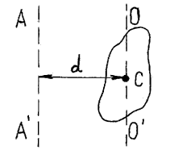

1. ВВЕДЕНИЕ. Предмет и задачи курса физики
2. МЕХАНИКА.
Глава 1. КИНЕМАТИКА
2.1.1. Механическое движение. Физические модели реальных тел, используемые в механике. Система отсчета. Траектория. Виды движений.2.1.2. Кинематические уравнения движения. Длина пути и вектор перемещения.
2.1.3. Кинематические характеристики. Скорость.
2.1.4. Кинематические характеристики. Ускорение.
2.1.5. Поступательное и вращательное движение твердого тела.
2.1.6. Связь между кинематическими характеристиками при различных видах движений.
Глава 2. ДИНАМИКА. ЗАКОНЫ НЬЮТОНА
2.2.1. Динамические характеристики поступательного движения. Сила. Масса. Импульс2.2.2. Виды сил
2.2.3. Первый закон Ньютона
2.2.4. Второй закон Ньютона
2.2.5. Третий закон Ньютона
2.2.6. Закон сохранения импульса
2.2.7. Динамические характеристики вращательного движения.
2.2.8. Основное уравнение динамики вращательного движения
2.2.9. Закон сохранения момента импульса
Глава 3. Работа и механическая энергия
2.3.1. Работа постоянной и переменной силы. Мощность. Потенциальные (консервативные) и непотенциальные силы2.3.2. Энергия
2.3.3. Кинетическая энергия
2.3.4. Потенциальная энергия
2.3.5. Закон сохранения механической энергии
2.3.6. Сравнение кинематических и динамических характеристик поступательного и вращательного движений
2.3.7. Применение законов сохранения в теории ударов тел
3. Вопросы для самоконтроля. Задачи. Ответы к задачам
4. Принятые обозначения
1. ВВЕДЕНИЕ. Предмет и задачи курса физики
Объектом человеческого познания является окружающий нас реальный мир. Но этот мир бесконечно разнообразен и находится в непрерывном движении и изменении. Изучение огромного разнообразия мира не может быть охвачено одной наукой: разнообразны формы существования материи, различны явления, в которых проявляется реальный мир, отличительны способы их изучения. Человечество в своем развитии создало множество наук, изучающих реальный мир, все они могут быть разбиты на три группы:
- естествознание - совокупность наук о природе (физика, химия, астрономия, геология, биология и т.д.);
- группа прикладных и технических наук, изучающая применение результатов, полученных в области естествознания (теплофизика, радиотехника, электроника, вычислительная техника и т.д.);
- социально-экономические науки, изучающие человеческое общество и законы его развития (экономика, социология, соционика, психология).
Среди всех естественных наук физике принадлежит роль фундаментальной науки. Главная цель физики - выявить и объяснить законы природы, которые определяют все физические явления, изучить наиболее общие свойства материального мира. Вследствие этой общности физические законы лежат в основе естествознания. Они пригодны для всех видов материи: живой и неживой, простой и сложной, материи в виде частиц, космических тел, Земли в целом, Вселенной, и материи в виде полей (полей сил тяготения, электромагнитных, биологических и т.д.). Объекты, изучаемые физикой, универсальны, в то время как в других естественных науках объекты исследования ограничены. Так, биология изучает живую материю, геология - земную кору и Землю, астрономия - космические тела, космические системы, Вселенную.
Исторически изучение окружающего мира привело к разделению физики на отдельные разделы.
Механика изучает наиболее простую форму существования материи - механическое движение. В механике несущественно нагрето, заряжено, намагничено тело или нет. В процессе изучения механических явлений были введены многие понятия (масса, скорость, ускорение, сила, работа, энергия и т.д.). Оказалось, что законы механики верны не только для механических движений.
Из литературных источников, список которых приведен в конце данного курса лекций, [1,2] являются основными учебниками, рекомендованными для ВУЗов, [3-6,15] - дополнительная учебная литература, [10-12] - справочная литература, [7-9,13,14] - наши методические разработки. По ходу изложения учебного материала в случае необходимости мы будем ссылаться на литературные источники.
2. МЕХАНИКА.
Глава 1. КИНЕМАТИКА
2.1.1. Механическое движение. Физические модели реальных тел, используемые в механике. Система отсчета. Траектория. Виды движений.
1. Механическое движение - изменение положения тела или отдельных его частей в пространстве с течением времени.
Внутреннее строение движущихся тел, их химический состав не влияет на механическое движение. Для описания движения реальных тел в зависимости от условий задачи пользуются различными моделями: материальная точка, абсолютно твердое тело, абсолютно упругое тело, абсолютно неупругое тело и т.д.
Материальной точкой называется тело, размерами и формой которого можно пренебречь в условиях данной задачи. В дальнейшем вместо термина "материальная точка" будем употреблять термин "точка". Одно и то же тело можно свести к материальной точке в одной задаче, и необходимо учитывать его размеры в условиях другой задачи. Например, расчет движения самолета, летящего над Землей, можно производить, считая его материальной точкой. А при расчете обтекания воздухом крыла того же самолета надо учитывать форму и размеры крыла.
Любое протяженное тело можно рассматривать как систему материальных точек.
Абсолютно твердое тело (а.т.т.) - тело, деформацией которого можно пренебречь в условиях данной задачи. А.т.т. можно рассматривать как систему жестко связанных между собой материальных точек, т.к. расстояние между ними не изменяются при любых взаимодействиях.
Абсолютно упругое тело - тело, деформация которого подчиняется закону Гука (см. § 2.2.2.), и после прекращения силового воздействия оно полностью восстанавливает первоначальные размеры и форму.
Абсолютно неупругое тело - тело, которое после прекращения силового воздействия на него не восстанавливается, а полностью сохраняет деформированное состояние.
2. Для определения положения тела в пространстве и во времени надо ввести понятие системы отсчета. Выбор системы отсчета произволен.
Системой отсчета называется тело или группа тел, считающиеся условно неподвижными и снабженные устройством отсчета времени (часами, секундомером и т.д.), относительно которых рассматривается движение данного тела.
Неподвижное тело (или группу тел) называют телом отсчета и для удобства описания движения с ним связывают систему координат (декартову, полярную, цилиндрическую и т.д.).
Выберем в качестве системы координат декартову прямоугольную систему XYZ (подробно см.[8]). Положение точки С в пространстве можно определить координатами х, y, z (Рисунок 1).

Рисунок 1 - Определение положения точки в декартовой системе координат.
Однако положение той же точки в пространстве можно задать с помощью одной векторной
величины
r = r(x, y, z), называемой радиус-вектором точки С (Рисунок 1).
3. Линия, которую тело описывает при своем движении, называется траекторией. По виду траектории движения можно разделить на прямолинейные и криволинейные. Траектория зависит от выбора системы отсчета. Так, траектория движения точек винта самолета относительно летчика - окружность, а относительно Земли - винтовая линия. Другой пример: какова траектория движения кончика иглы проигрывателя относительно пластинки? корпуса проигрывателя? корпуса звукоснимателя? Ответы таковы: спираль, дуга окружности, состояние покоя (игла неподвижна).
2.1.2. Кинематические уравнения движения. Длина пути и вектор перемещения.
1. При движении тела относительно выбранной системы координат его положение изменяется с течением времени. Движение материальной точки будет полностью определено, если заданы непрерывные и однозначные функции времени t:x = x(t), y = y(t), z = z(t).
Эти уравнения описывают изменение координат точки от времени и называются кинематическими уравнениями движения.
2. Путь - часть траектории, пройденной телом за определенный промежуток времени. Момент времени t0, от которого начинается его отсчет, называется начальным моментом времени, обычно t0=0 в силу произвольного выбора начала отсчета времени.
Длиной пути называется сумма длин всех участков траектории. Длина пути не может быть величиной отрицательной, она всегда положительна. Например, материальная точка переместилась из точки траектории С сначала в точку А, а затем в точку В (Рисунок 1). Длина ее пути равна сумме длин дуги СА и дуги АВ.
2.1.3. Кинематические характеристики. Скорость.
1. Для характеристики быстроты движения тел в физике вводится понятие скорости. Скорость - вектор, а значит, характеризуется величиной, направлением, точкой приложения.
Рассмотрим движение вдоль оси Х. Положение точки будет определяться изменением со временем координаты Х.
Если за время ∆ произошло перемещение точки на ∆r,
то величина является средней скоростью движения:
 .
.
Средней скоростью движущегося тела называется вектор, равный отношению вектора перемещения к величине промежутка времени, за которое это перемещение произошло.
Модуль средней скорости есть физическая величина, численно равная изменению пути за единицу времени.
2. Для определения скорости в данный момент времени, мгновенной скорости, нужно рассмотреть интервал времени ∆t→0, тогда
Используя понятие производной, можно записать для скорости
Скорость тела в данный момент времени называется мгновенной скоростью (или просто скоростью).
Вектор V мгновенной скорости направлен по касательной к траектории в сторону движения тела.
2.1.4. Кинематические характеристики. Ускорение.
1. Быстрота изменения вектора скорости характеризуется величиной, называемой ускорением. Ускорение может возникнуть как за счет изменения величины скорости, так и за счет изменения направления скорости.
Пусть в момент времени t скорость тела равна v1, а через промежуток времени ∆t в момент времени t + ∆t равна v2, приращение вектора скорости за ∆t равно ∆v.
Средним ускорением тела в интервале времени от t до t + ∆t называется вектор аср, равный отношению приращения вектора скорости ∆v к промежутку времени ∆t:
Cреднее ускорение есть физическая величина, численно равная изменению скорости за единицу времени.
2.Для определения ускорения в данный момент времени, т.е. мгновенного ускорения, нужно рассмотреть малый интервал времени ∆t→0. Тогда вектор мгновенного ускорения равен пределу вектора среднего ускорения при стремлении промежутка времени ∆t к нулю:
Используя понятие производной, можно дать для ускорения следующее определение:
Ускорением (или мгновенным ускорением) тела называется векторная величина а, равная первой производной по времени от скорости тела v или второй производной по времени от пути.
3. При вращении точки по окружности ее скорость может изменяться по величине и по направлению (рисунок 2)
Рисунок 2.- Изменение скорости точки при вращении по окружности
На рисунке 2 в положении 1 скорость точки v1, в положении 2 скорость точки v2. Модуль скорости v2 больше модуля скорости v1 , ∆v- вектор изменения скорости ∆v = v2 -v1
Вращающаяся точка имеет тангенциальное ускорение, равное аτ=dv/dt, оно изменяет скорость по величине и направлено по касательной к траектории; и нормальное ускорение, равное аn= v2/R, оно меняет направление скорости и направлено по радиусу окружности (R) (см. Pисунок 3)
Рисунок 3 - Полное, тангенциальное и нормальное ускорения вращающейся точки
Вектор полного ускорения равен , т.е. он может быть представлен как сумма векторов тангенциального aτ и нормального an ускорений. Модуль полного ускорения равен:

2.1.5. Поступательное и вращательное движение твердого тела.
1. До сих пор речь шла о характере движения, о траектории, о кинематических характеристиках, но не рассматривалось само движущееся тело. Пример. Движется автомобиль. Он является сложным телом. Движения его кузова и колес различны. Если тело сложное, то возникает вопрос: к движению каких частей тела относятся понятия пути, скорости, ускорения, введенные ранее?
Прежде, чем ответить на этот вопрос, надо выделить формы механического движения. Каким бы сложным не было движение тела, его можно свести к двум основным: поступательному движению и вращению вокруг неподвижной оси. Колебательное движение будет рассмотрено отдельно. В примере с автомобилем поступательно движется кузов автомобиля. Сам автомобиль является телом, которое может быть рассмотрено с помощью модели абсолютно твердого тела (а.т.т.). Для краткости мы будем называть абсолютно твердое тело просто твердое тело.
Поступательным движением твердого тела называется движение, при котором любая прямая, проведенная между его двумя точками, остается при движении параллельна самой себе.
Поступательное движение может быть и не прямолинейным движением.
Примеры. 1) В аттракционе "Колесо обозрения" кабинки - люльки, в которых сидят люди, двигаются поступательно. 2) Если стакан с водой перемещать по траектории, представленной на рисунке 5 так, чтобы поверхность воды и направляющая стакана составляли бы прямой угол, то движение стакана является не прямолинейным, но поступательным. Прямая АВ остается при движении стакана параллельна самой себе.
Рисунок 4.- Пример поступательного движения твердого тела.
Особенностью поступательного движения твердого тела является то, что все точки тела описывают одинаковую траекторию, проходят за определенные промежутки времени ∆t одинаковые пути и в любой момент времени имеют одинаковые скорости. Поэтому кинематическое рассмотрение поступательного движения твердого тела сводится к изучению движения любой из его точек. Поступательное движение тела может быть сведено к движению материальной точки. В динамике обычно за такую точку принимают центр масс тела. Кинематические характеристики и кинематические уравнения, вводимые для материальной точки, описывают и поступательное движение твердого тела.
2. Движение колес автомобиля отличается от движения кузова. Точки колеса, находящиеся на разных расстояниях от его оси, описывают разные траектории, проходят различные пути и имеют разные скорости. Чем дальше точка находится от оси колеса, тем больше ее скорость, тем больший путь она проходит за определенный промежуток времени. Движение, в котором участвуют колеса автомобиля, называется вращательным. Ясно, что модель материальной точки для описания вращения реального тело не подходит. Но и здесь вместо реального тела (например, колеса автомобиля с деформируемыми шинами и т.д.) используют физическую модель - абсолютно твердое тело.
Вращательным движением твердого тела называется движение, когда все точки тела описывают окружности, центры которых лежат на прямой, называемой осью вращения и перпендикулярной к плоскостям, в которых вращаются точки тела (Рисунок 5).
Так как для разных точек вращающегося тела траектории, пути, скорости различны, то встает вопрос: можно ли найти физические величины, которые имели бы одинаковые значения для всех точек вращающегося тела, Да, оказывается, есть такие величины, они называются угловыми.
Рисунок 5.- Вращение твердого тела
Твердое тело, вращающееся вокруг неподвижной оси, имеет одну степень свободы, его положение в пространстве полностью определяется значением угла поворота ∆φ из некоторого начального положения (Рисунок 5). Все точки твердого тела повернутся за промежуток времени ∆ на угол ∆φ.
При малых промежутках времени, когда углы поворота невелики, их можно рассматривать как векторы, хотя и не совсем обычные. Вектор элементарного (бесконечно малого) угла поворота ∆φ направлен вдоль оси вращения по правилу правого буравчика, его модуль равен углу поворота (Рисунок 5). Вектор ∆φ называется угловым перемещением.
Правило правого буравчика заключается в следующем:
Если рукоятка правого буравчика вращается вместе с телом (точкой), то поступательное движение буравчика совпадает с направлением ∆φ.
Другая формулировка правила: Из конца вектора ∆φ видно, что движение точки (тела) происходит против часовой стрелки.
Положение тела в любой момент времени t определяется кинематическим уравнением вращательного движения ∆φ = ∆φ(t).
3. Для характеристики быстроты вращения служит угловая скорость.
Средней угловой скоростью называется физическая величина, равная отношению углового перемещения к промежутку времени, за которое это перемещение произошло
Предел, к которому стремится средняя угловая скорость при ∆→0, называется мгновенной угловой скоростью тела в данный момент времени или просто угловой скоростью вращения твердого тела (точки).
Угловая скорость равна первой производной от углового перемещения по времени. Направление мгновенной угловой скорости определяется по правилу правого буравчика и совпадает с направлением ∆φ (Рисунок 6). Кинематическое уравнение движения для угловой скорости имеет вид ω = ω (t).
Рисунок 6 - Направление векторов угловых характеристик при вращательном движении.
4. Для характеристики быстроты изменения угловой скорости тела при неравномерном вращении вводится вектор углового ускорения β, равный первой производной от его угловой скорости ω по времени t.
Среднее угловое ускорение есть величина отношения изменения угловой скорости ∆ω к промежутку времени ∆t, за которое это изменение произошло β ср = ∆ω/∆t
Вектор углового ускорения направлен вдоль оси вращения и совпадает с направлением угловой скорости, если движение ускоренное, и противоположен ему, если вращение замедленное (Рисунок 6).
5. При вращательном движении твердого тела все его точки двигаются так, что вращательные характеристики (угловое перемещение, угловая скорость, угловое ускорение) для них одинаковы. А линейные характеристики движения зависят от расстояния точки до оси вращения.
Связь между этими величинами v, ω, r задается следующим соотношением:
v = [ω∙r],
т.е. линейная скорость v любой точки С твердого тела, вращающегося вокруг неподвижной оси с угловой скоростью ω, равна векторному произведению ω на радиус-вектор r точки С относительно произвольной точки О на оси вращения.
Подобное соотношение существует между линейным и угловым ускорениями вращающейся точки твердого тела:
а = [β∙r].
2.1.6. Связь между кинематическими характеристиками при различных видах движений.
По зависимости скорости и ускорения от времени все механические движения делятся на равномерное, равнопеременное (равноускоренное и равнозамедленное) и неравномерное.
Рассмотрим кинематические характеристики и кинематические уравнения, введенные в предыдущих параграфах, для разных видов движений.
1. Прямолинейное движение.
Прямолинейное равномерное движение.
Направление движения задается осью ОХ.
Ускорение а = 0 (аn = 0, аτ = 0), скорость v = const, путь s = v∙t, координата x = x0 v∙t, где x0 - начальная координата тела на оси ОХ.
Путь - величина всегда положительная. Координата может быть и положительной и отрицательной, поэтому в уравнении, задающем зависимость координаты от времени, перед величиной v∙t в уравнении стоит знак плюс, если направление оси ОХ и направление скорости совпадают, и знак минус, если они противоположно направлены.
Прямолинейное равнопеременное движение.
Ускорение а = аτ = const, аn = 0, скорость ,
путь , координата .
Перед величиной (at) в кинематическом уравнении для скорости знак плюс соответствует равноускоренному движению, а знак минус - равнозамедленному движению. Это замечание верно и для кинематического уравнения пути, разные знаки перед величинами (at2/2) соответствуют разным видам равнопеременного движения.
В уравнении для координаты знак перед (v0t) может быть и плюс, если направления v0 и оси ОХ совпадают, и минус, если они направлены в разные стороны.
Разные знаки перед величинами соответствуют равноускоренному или равнозамедленному движениям. 
Прямолинейное неравномерное движение.
Ускорение а = аτ>≠ const, аn = 0,
скорость , путь .
2. Поступательное движение
Для описания поступательного движения можно использовать законы, приведенные в §2.1.6. (пункт 2) или §2.1.4. (пункт3). Использование тех или иных законов для описания поступательного движения зависит от его траектории. Для прямолинейной траектории используются формулы из §2.1.6. (пункт 2), для криволинейной - §2.1.4. (пункт3).
3. Вращательное движение.
Отметим, что решение всех задач на вращательное движение твердого тела вокруг неподвижной оси аналогично по форме задачам на прямолинейное движение точки. Достаточно заменить линейные величины s, vх, aх на соответствующие угловые величины φ, ω, β, и мы получим все закономерности и соотношения для вращающегося тела.
Равномерное вращение по окружности
(R - радиус окружности).
Ускорение: полное а = аn, нормальное ,
тангенциальное аτ = 0, угловое β = 0.
Скорость: угловая ω = const, линейная v = ωR = const.
Угол поворота ∆φ = ∆ φ0 + ωt, ∆φ0 - начальное значение угла. Угол поворота величина положительная (аналог пути).
Периодом вращения называется промежуток времени T, в течении которого тело, равномерно вращаясь с угловой скоростью ω, совершает один оборот вокруг оси вращения. При этом тело поворачивается на угол 2π.
.
Частота вращения показывает число оборотов, совершаемых телом за единицу времени при равномерном вращении с угловой скоростью ω:
.
Равнопеременное вращение по окружности.
Ускорение: угловое β = const, тангенциальное аτ = βR=const,
нормальное аn = ω 2R ≠ const,
полное
Скорость: угловая ω = ω0 ( βt), линейная
Угловое перемещение .
Все сказанное ранее относительно знаков в кинематических уравнениях для прямолинейного равнопеременного движения остается верным и для кинематических уравнений вращательного движения: плюс в формулах относится к равноускоренному вращению, минус - к равнозамедленному.
Неравномерное вращение.
Ускорение: аτ = аτ (t), аn = а n(t), β ≠ const,
Скорость:
Угловая ω = dφ/dt, линейная .
Глава 2. ДИНАМИКА. ЗАКОНЫ НЬЮТОНА
2.2.1. Динамические характеристики поступательного движения. Сила. Масса. Импульс
До сих пор мы рассматривали перемещение тел в зависимости от времени без выяснения причин, вызывающих эти перемещения. Законы динамики устанавливают связь между движением тел и причинами, которые вызвали или изменили то или иное движение.
Рассмотрим поступательное движение материальной точки, для этого введем динамические характеристики, с помощью которых будем описывать такое движение. К таким характеристикам относятся понятие силы, массы, импульса. Начнем рассмотрение с движений тел в системах отсчета, которые называются инерциальными, и определение которых будет дано позднее.
1. Движение любого тела в инерциальной системе отсчета вызывается или изменяется только при взаимодействии с другими телами. Для описания взаимодействия между телами вводится понятие силы, которая дает количественную меру этого взаимодействия.
Физическая природа взаимодействия может быть различной, существуют гравитационные, электрические, магнитные и другие взаимодействия (см. Таблицу 1). В механике физическая природа сил несущественна, вопрос об их происхождении не выясняется. Но для всех видов взаимодействий их количественная мера должна быть выбрана единым образом. Измерять силы различной природы надо с помощью одних и тех же эталонов и единиц измерений. Законы механики универсальны, т.е. они описывают движение тел под действием силы любой природы. Для взаимодействий, которые рассматриваются в механике, сила может быть определена следующим образом.
Силой называется векторная величина F, являющаяся мерой механического воздействия одного тела на другое.
Механическое взаимодействие может осуществляться как между непосредственно контактирующими телами (сила трения, сила реакции опоры и т.д.), так и между удаленными телами.
Особая форма материи, связывающая частицы вещества в единые системы и передающая с конечной скоростью действие одних частиц на другие, называется физическим полем, или просто полем.
Взаимодействия между удаленными телами осуществляется посредством гравитационных (сила тяжести) или электромагнитных полей.
Механическое действие силы может вызвать ускорение тела или его деформацию. Сила - результат взаимодействия двух тел. Для правильного определения сил, действующих на тело, можно воспользоваться литературой [7,9], где приведены многочисленные примеры.
Сила F - вектор - полностью определена, если заданы ее модуль (величина), направление в пространстве и точка приложения. Прямая, вдоль которой направлен вектор F, называется линией действия силы.
Если говорить о силе, приложенной не к материальной точке, а к твердому телу и вызывающей его поступательное движение, то воздействие на тело не изменится при переносе точки действия силы вдоль линии ее действия.
Одновременное действие на материальную точку С нескольких сил F1 ,F2..... Fn эквивалентно действию одной силы, равной их геометрической (векторной) сумме и называемой результирующей или равнодействующей силой (см. Рисунок 7):
Fрез. = F1 +F2 + ..... +Fn.
Рисунок 7 - Векторное сложение сил.
Силы, действующие на тело или систему тел, можно разделить на внешние и внутренние. Тела, не входящие в состав исследуемой механической системы, называются внешними и силы, действующие с их стороны, - внешние. Внутренние силы - силы, действующие на точку или тело со стороны точек или тел, входящих в рассматриваемую систему.
Система, на которую не действуют внешние силы, называется изолированной или замкнутой.
2. Основополагающим понятием в динамике является понятие массы m, о котором в кинематике даже не упоминалось, не было необходимости. Любой материальный объект (тела, элементарные частицы, поля) обладает массой. Масса выступает как многосторонняя характеристика тела.
Она определяет его гравитационные свойства, т.е. силы, с которыми тело притягивается к другим телам, в частности, к Земле.
Масса характеризует инерционные свойства тела, т.е. способность тела сохранить состояние покоя или равномерного прямолинейного движения, или изменить скорость.
Масса тела m определяет количество вещества в данном теле и равна произведению плотности вещества ρ на объем V тела:
m = ρ∙V.
Масса тела вместе с его скоростью определяет импульс и кинетическую энергию тела.
В классической механике для понятия массы характерно следующее:
- m = const, она не зависит от состояния движения тела,
- масса - величина аддитивная, т.е. масса системы равна арифметической сумме масс тел, входящих в систему,
- масса замкнутой системы остается неизменной при любых процессах, происходящих внутри системы (закон сохранения массы).
Итак, для массы можно дать следующее определение.
Масса - мера инертности тела или мера гравитационного взаимодействия.
3. Импульсом материальной точки называется векторная величина, равная произведению ее массы на ее скорость P = mv.
Импульсом системы материальных точек называется вектор, равный геометрической (векторной) сумме импульсов всех материальных точек системы:
P = P1 + P2 +.....+ Pn = Pi
Используя понятие массы, импульс системы равен произведению массы всей системы на скорость ее центра масс P = mvц.
Импульс P - вектор, по направлению совпадающий с направлением скорости.
Импульс - одна из фундаментальных характеристик физической системы. И масса, и скорость были определены ранее, но только импульс обладает уникальным свойством. Для него сформулирован закон сохранения импульса, который является универсальным законом. Он выполняется и в микромире (на уровне элементарных частиц, атомов и молекул), и в макромире (мир вокруг нас), и в мегамире (на уровне планет, Вселенной, Галактики). До сих пор не открыто явлений, в которых бы нарушался закон сохранения импульса.
2.2.2. Виды сил
1. В настоящее время понятия основных взаимодействий, известных в природе, связано с понятием основных полей. Понятие физического поля мы определили ранее. Вообще понятие поля более широкое. Всякую физическую величину, плавно изменяющуюся в пространстве и однозначно определенную во всех его точках, можно рассматривать как поле. Поля бывают векторные и скалярные. Примерами скалярных полей является поле температур вблизи нагретой пластины или поле давлений около поверхности Земли. Примерами векторных полей является электрические и магнитные поля, гравитационное поле Земли и т.д. В Таблице 1 приведены характеристики различных взаимодействий, известных к настоящему времени в природе. Соответственно название физических полей совпадает с названием взаимодействий.
Таблица 1(данные взяты из [1], том 3, стр263).|
Взаимодействие/ |
Радиус взаимодействия |
Const взаимодействия |
Время взаимодействия |
| Гравитационное |
¥ |
10 –39 |
– |
| Электромагнитное |
¥ |
≈10 -2 |
10-16 -10-20 с |
| Ядерное (сильное) |
10 –15 м |
10 |
10-23 с |
| Слабое (распадное) |
10 –15 м |
10 –14 |
10 -9 с |
Интенсивность взаимодействия принято характеризовать с помощью безразмерной величины, пропорциональной вероятности процессов, обусловленных данным видом взаимодействия. Гравитационное взаимодействие является универсальным, ему подвержены все без исключения элементарные частицы, но оно обладает предельно малой интенсивностью. Понятие времени взаимодействия является весьма условным. Эмпирически его можно ввести как минимальное время жизни частиц, подверженных распадам за счет данного взаимодействия. Прочерк в соответствующей графе для гравитационного взаимодействия стоит потому, что предполагаемый переносчик гравитационного взаимодействия – гравитон - экспериментально пока не обнаружен.
2. Силы в механике. Наиболее фундаментальные силы, лежащие в основе всех механических явлений, это силы гравитационные и электрические. Сила тяжести относится к гравитационному взаимодействию, сила трения и силы упругости - к электромагнитному взаимодействию.
Сила тяжести F = mg , где m - масса тела, g - ускорение силы тяжести. Заметим, что вес тела P - это сила, с которой тело действует на опору или подвес P = m (g – a), где a - ускорение тела (и опоры) относительно Земли. Если а = g, то вес тела равен нулю Р = 0 (состояние невесомости).
Упругая сила – сила, пропорциональная смещению точки из положения равновесия и направленная к положению равновесия. Примером такой силы может быть сила упругой деформации при растяжении (сжатии) пружины или стержня. В соответствии с законом Гука эта сила определяется так:
Fупр. = - k∙∆l, где k - коэффициент жесткости пружины (стержня), ∆l - величина упругой деформации. Знак минус означает, что противоположны направления смещения точки и силы упругости, возникающей при этом смещении и действующей на смещенную точку.
Величина силы трения скольжения, возникающая при скольжении одного тела по поверхности другого, равна Fтр. = μN, где μ - коэффициент трения, зависящий от соприкасающихся поверхностей, N - сила реакции опоры.
Сила трения направлена в сторону противоположную направлению движения данного тела относительно другого. Есть другие виды сил трения - силы трения покоя и сила трения качения.Сила сопротивления, действующая на тело при его поступательном движении в газе или жидкости определяется зависимостью Fсопр. = αv, где v - скорость тела относительно среды, α - положительный коэффициент, характерный для данного тела и данной среды, при малых скоростях практически постоянен. Сила сопротивления всегда направлена противоположно вектору скорости тела.
Выталкивающая сила Архимеда равна весу вытесненной жидкости или газа: FАрх. = gρсрV, где ρср. - плотность среды, V - объем тела, g - ускорение свободного падения.
2.2.3. Первый закон Ньютона
Законы Ньютона представляют собой обобщение опытных данных (фактов). Эти законы устанавливались на основании наблюдений медленных по сравнению со скоростью света в вакууме движений.
1-й закон Ньютона.
Всякая материальная точка или тело сохраняет состояние покоя или равномерного прямолинейного движения, пока на них не действуют силы или действие сил скомпенсировано.
Этот закон называется законом инерции, а движение точки или тела, свободных от внешних воздействий, называется движением по инерции.
Покой - частный случай равномерного прямолинейного движения, когда
а = 0 и v = const, или v = 0.
Любое механическое движение - относительное движение, его характер зависит от системы отсчета. Закон инерции справедлив не во всех системах отсчета.
Системы, в которых выполняется первый закон Ньютона, называются инерциальными.
Системы, в которых не выполняется первый закон Ньютона, называются неинерциальными.
Инерциальных систем бесконечно много. Любая система, движущаяся относительно данной инерциальной системы равномерно и прямолинейно, является также инерциальной системой.
2.2.4. Второй закон Ньютона
Первый закон Ньютона говорит о состоянии тел, если на них не действуют силы. Каким будет движение, если на точку или тело действуют силы? Ответ на этот вопрос дает второй закон Ньютона, он связывает три величины - силу, массу и ускорение.
Второй закон Ньютона.
Произведение массы материальной точки (тела) на ее ускорение равно действующей на нее силе F = ma.
Если на тело действует несколько сил, то в формулировке 2-ого закона используется равнодействующая сила (см. Рисунок 7)
Fрез = ma.
Это является следствием независимости действия сил на тело (точку) или говорят, что силы подчиняются принципу суперпозиции. Такое утверждение надо рассматривать как обобщение опытных фактов.
Так как в классической механике а = dv/dt и m = const, то второй закон можно переписать в виде:
И еще один вид уравнения 2-ого закона:
F∙dt = dP
Величина F∙dt называется вектором импульса силы, а величина dP - вектор изменение импульса тела под действием данной силы.
Основное уравнение динамики (второй закон Ньютона в векторном виде) можно записать в проекциях на касательное направление и нормаль к траектории в данной точке, используя полученные ранее выражения для нормального и тангенциального ускорений (§2.1.4):
,
.
Если тело (или точка) вращается по окружности, то можно записать уравнение для силы, действующей по касательной к траектории
,
и для силы, действующей по радиусу окружности (Рисунок 8)
.

Рисунок 8 – Разложение вектора F на составляющие Fτ и Fn, R – радиус окружности, по которой вращается тело (или точка).
2.2.5. Третий закон Ньютона
В первом и во втором законах Ньютона речь идет о силах, действующих на данное тело, и его движении под действием этих сил, но нет упоминания о других телах, со стороны которых эти силы действуют. Роль второго тела во взаимодействии отражена в третьем законе Ньютона.
3-й закон Ньютона.
Силы, с которыми два тела действуют друг на друга, равны по величине, направлены в противоположные стороны F12 = - F21.
F12 - сила, действующая со стороны второго тела на первое, приложена к первому телу, F21 - сила, действующая на второе тело со стороны первого, приложена ко второму телу (Рисунок 9).
Рисунок 9 - Взаимодействие двух тел.
2.2.6. Закон сохранения импульса
1. Совокупность тел, частиц (например, в газе) или отдельное твердое можно рассматривать как систему материальных точек. Если система с течением времени изменяется, то это означает, что изменяется ее состояние. Зная законы действующих на частицы системы сил и состояние системы в начальный момент времени, можно с помощью уравнений движения рассчитать состояние системы в любой момент времени. Но в некоторых случаях это может быть задачей достаточно сложной (сложна сама система или неизвестны законы действующих сил, или детальное рассмотрение поведения отдельных частиц системы не имеет смысла, например, в газе).
Возникает вопрос: нет ли каких-либо общих принципов, которые позволили бы иначе подойти к решению задач и обойти возникшие трудности? Оказалось, такие принципы есть. Это законы сохранения энергии, импульса и момента импульса (см. [7], стр. 52-57).
Эти законы справедливы не только в рамках классической механики. Все они являются универсальными законами природы, выполняются и в макромире, и в микромире, и во всей Вселенной. В настоящее время неизвестно ни одного эксперимента и ни одного физического явления, в котором упомянутые универсальные законы сохранения нарушались бы.
Закон сохранения импульса выполняется для замкнутых систем (см. §2.2.1 п.1).
2. Справедливость закона сохранения импульса можно показать для замкнутой системы, состоящей из двух тел, применяя второй и третий законы Ньютона. Пусть первое тело, имеющее массу m1, движется со скоростью , второе тело, масса которого m2, движется со скоростью 2.
При столкновении тела взаимодействуют друг с другом, и, согласно Третьему закону Ньютона, сила
 12 = -
12 = -  21.
21.
По второму закону Ньютона сила F12, действующая на первое тело, изменит импульс первого тела, можно записать
 12= ,
12= ,
Точно так же можно записать, что сила F21 изменит импульс второго тела:
 21= .
21= .
Подставим значения F12 и F21 в третий закон Ньютона:
= - ,
Т.к. время взаимодействия  - одно и то же, то:
- одно и то же, то:
= -  или + = .
или + = .
Рассматриваемая нами замкнутая система состояла из двух тел, полный вектор импульса этой системы
= + ,
+ = - это изменение вектора полного импульса. При взаимодействии двух тел получили, что изменение вектора полного импульса = 0, следовательно, полный вектор импульса системы при взаимодействии не изменился: если = 0, то P = const.
Если система состоит из N тел, то P = m1∙ v1 + m2∙ v2 + ........+ mN∙ v N есть полный вектор импульса замкнутой системы, и P = const.
Закон сохранения импульса (ЗСИ).
Полный вектор импульса замкнутой системы есть величина постоянная при любых взаимодействиях внутри данной системы. Только внешние силы изменяют импульс системы.
3. Если векторная сумма внешних сил не равна нулю, то надо посмотреть, нет ли такого направления, вдоль которого внешние силы не действуют или сумма их проекций на это направление равна нулю. Если такое направление в движении тел, входящих в систему, есть, то можно применять закон сохранения для проекции полного вектора импульса системы на выделенное направление.
2.2.7. Динамические характеристики вращательного движения.
При поступательном движении системы все ее точки проходят одинаковые пути, имеют в данный момент времени одинаковые скорости и ускорения. При вращательном движения твердого тела все эти характеристики различны для разных точек вращающегося тела, поэтому и математическая форма 2-го закона Ньютона будет иной. При вращательном движении существенно изменяются сами понятия причины, вызывающей вращение, и величины, определяющей инертность тела.
При поступательном движении динамическими характеристиками являются сила, масса, импульс. При вращательном движении динамическими характеристиками являются момент силы, момент инерции, момент импульса. Эти характеристики можно рассматривать относительно точки вращения (полюса) и относительно оси вращения. В дальнейшем будем рассматривать эти характеристики относительно оси вращения. Определим эти характеристики.
1.Момент силы, действующей на материальную точку, относительно оси вращения.
а) Пусть материальная точка массы m вращается относительно оси ОО ΄. Обозначим r - радиус-вектор, проведенный от оси вращения до точки приложения силы F (Рисунок 10).
Рисунок 10.Вращение материальной точки
Моментом силы F относительно оси вращения называется вектор M, равный векторному произведению радиус-вектора на вектор силы M = [ r∙ F] и направленный по оси вращения в сторону, определяемую по правилу правого буравчика
Модуль вектора момента силы равен M = F∙r∙sinα, где α - угол между векторами rи F.
2. Момент импульса.
Моментом импульса материальной точки относительно оси вращения называется вектор L, равный векторному произведению радиуса-вектора r на вектор импульса P: L = [ r∙P] = [ r∙ mv],
где m, v - соответственно масса и вектор скорости точки. Направление Lопределяется по правилу правого буравчика. Модуль вектора L = mv∙ r∙ sinα, где α - угол между векторами r и v.
3. Момент инерции материальной точки относительно оси вращения
Моментом инерции материальной точки относительно оси вращения называется физическая величина, численно равная произведению массы точки на квадрат расстояния точки до оси вращения (Рисунок 10).
I = mr2
Момент инерции - величина скалярная.
Моментом инерции механической системы относительно неподвижной оси называется физическая величина, равная сумме произведений масс всех точек системы на квадраты их расстояний до оси вращения.
I =  mi∙ ri2
mi∙ ri2
Для твердого тела, разбитого на элементарные массы ∆ mi, момент инерции относительно оси равен
I =  ∆ mi∙ ri2.
∆ mi∙ ri2.
Моменты инерции тел правильной геометрической формы могут быть легко вычислены. В Таблице 2 приведены результаты расчетов моментов инерции для тел правильной формы относительно оси вращения ОО', проходящей через их центр масс.
Для расчета моментов инерции вращающихся тел вокруг оси, не проходящей через центр масс тела, можно использовать теорему Штейнера.
4.Теорема Штейнера.Момент инерции тела относительно произвольной оси АА' равен сумме момента инерции тела относительно оси ОО', проходящей через центр масс тела и параллельной данной оси АА', и произведения массы тела как целого на квадрат расстояния d между осями АА' и ОО' (Рисунок 11).
IАА' = IОО' + md2

Рисунок 11.
Пример. Применение теоремы Штейнера для расчета момента инерции стержня длины l и массы m (см. Таблицу 2), если ось вращения проходит не через центр масс, а через конец стержня, приводит к следующему:
IАА' = IОО' + md2 = .
Рисунок 12. Вращение стержня вокруг оси
2.2.8. Основное уравнение динамики вращательного движения
1. В разделе "Кинематика" при рассмотрении поступательного и вращательного движений мы показали, что кинематические уравнения обоих движений имеют одинаковый вид, но при поступательном движении мы используем линейные характеристики (путь, скорость, ускорение), а при вращательном - угловые характеристики (угловое перемещение, угловую скорость, угловое ускорение). Используем эту аналогию и в динамике. При поступательном движении уравнение второго закона Ньютона имеет вид dP/dt = F.
Для вращательного движения: dL/dt = M.
Это уравнение называется уравнением моментов или основным законом вращательного движения. Вид уравнения не изменится и для системы материальных точек и для вращения твердого тела, только L определяется как момент импульса для системы точек.
2. Еще один вид уравнения второго закона Ньютона для вращательного движения имеет вид:
M∙ dt = dL,
где величина M∙ dt называется импульс момента сил, а dL - изменение момента импульса системы.
2.2.9. Закон сохранения момента импульса
Обратимся к уравнению моментов dL/ dt = M, где M - главный вектор момента внешних сил.
Если M = 0, то и L = const.
Если относительно некоторой точки О выбранной системы отсчета момент всех сил, действующих на систему материальных точек, равен нулю, то относительно этой точки вектор момента импульса системы не изменяется с течением времени (закон сохранения момента импульса относительно полюса).
Примеры.
а) Человек стоит на скамье Жуковского, представляющей массивный, диск, который может вращаться вокруг оси, проходящей через его центр, с пренебрежимо малым трением. Момент импульса системы "человек - диск" равен нулю. Человек начинает идти вдоль обода диска. Диск начинает вращаться в обратную ходу человека сторону.
б) Фигурист выполняет "волчок", его руки раскинуты в стороны, его момент инерции относительно вертикальной оси вращения I1, угловая скорость ω1. Затем он резко прижимает руки к груди, его момент инерции уменьшается и становится I2, а угловая скорость ω2 увеличивается. При этом выполняется закон сохранения момента импульса относительно вертикальной неподвижной оси, проходящей через линию симметрии тела фигуриста I1∙ ω1 = I2∙ω2..
Глава 3. Работа и механическая энергия
2.3.1. Работа постоянной и переменной силы. Мощность. Потенциальные (консервативные) и непотенциальные силы
В физике работа неразрывно связана с изменением состояния тела или системы. Это изменение может выражаться самым различным образом: а) тело приобретает другую скорость, б) тело поднимается на другой уровень, в) тело деформируется, г) тело заряжается, д) тела намагничивается и т.д. Состояние механической системы (или тела) характеризуется одновременным заданием координат и скоростей всех точек системы (или тела) и может изменяться в процессе движения.
Процесс изменения характера движения тела происходит при его силовом взаимодействии с другими телами. Для количественного описания процесса вводят понятия силы и работы, совершаемой силой.
1.Если на тело действует постоянная сила F (Рисунок 13), и это приводит к перемещению ∆ r тела, то элементарной работой ∆А постоянной силы называется скалярное произведение вектора силы F и вектора перемещения ∆r:
∆А = (F∙∆r) = ½ F½½∆ r½ cos a ,
где a - угол между направлениями векторов силы F и перемещения ∆r, ( F∙ ∆r) – скалярное произведение двух векторов (см.[8]).

Рисунок 13 - Перемещение тела под действием постоянной силы.
Работа ∆А - скаляр. Если угол a - острый, то ∆А положительная величина, и говорят, что сила совершает работу. Если угол a - тупой, то ∆А - отрицательная величина, и говорят, что работа совершается против действия силы. Если a = 900, т.е. направления силы и перемещения взаимно перпендикулярны, то такая сила работы не совершает ∆А = 0. Такая сила не может изменить величину скорости тела, но она меняет направление скорости.
2. Работа переменной силы. Если сила или равнодействующая сил изменяет свою величину или направление (движение по криволинейной траектории, причем угол α ≠ 900), то работа ∆А, совершаемая переменной силой F (или Fрез) на конечном участке траектории вычисляется следующим образом.
На рисунке 14 представлен график зависимости силы F от пути S. Разобьем весь путь на N участков. Перемещение и действующая сила на каждом участке соответственно равны F i и ∆ r i. Тогда работа А, совершаемая силой F, равна алгебраической сумме работ, совершаемых каждой из сил F i на своем малом участке (Рисунок 14):
А = ∆А1 + ∆А2 +....+ ∆А N = ( F1∙∆ r1) + (F 2∙∆ r2) + ...+( F N∙∆ rN) =  (
Fi∙∆ ri),
(
Fi∙∆ ri),
где i = 1,2...... N - номер элементарного участка траектории.
Рисунок 14 - График зависимости силы от пути.
На участке ∆r i силу Fi можно считать постоянной, тогда элементарная работа ∆Аi на участке ∆r i равна ∆Аi= Fi∙∆ r i и равна площади заштрихованной фигуры на рисунке 14.
А= ∆Аi - это работа силы F на участке r, равна она численно площади S фигуры, ограниченной кривой зависимости F(х) и осью Х.
∆Аi - это работа силы F на участке r, равна она численно площади S фигуры, ограниченной кривой зависимости F(х) и осью Х.
3.Примеры вычисления работы.
а) Тело, поднятое над землей на высоту h, падает на землю (без трения) из точки В в точку С и возвращается обратно (Рисунок 15). Определить работу силы по замкнутому пути.
Сила, действующая на тело, постоянна и равна силе притяжения тела к Земле (сила тяжести). Работа этой силы на участке ВС равна .
Чтобы поднять тело без ускорения из точки С в точку В, надо приложить к телу силу, равную силе тяжести, но противоположно направленную, и работа на участке пути СВ равна (работа совершается против силы тяжести).
Полная работа на участке (ВС+СВ) равна нулю.
Рисунок 15. Падение тела с высоты h (a) и поднятие тела на высоту h (б)
б) Пружину длиной l1 растягиваем до длины l2. Какая работа при этом совершается?
Пусть х - длина, на которую растянута пружина, отсчет х от положения равновесия (Рисунок 16). При этом на пружину будет действовать упругая сила, старающаяся вернуть пружину в состояние равновесия, что соответствует минусу в формуле F = - kх (закон Гука). Если растянуть пружину еще на малую длину ∆х, надо совершить элементарную работу ∆А = - kх∙ ∆х.
Возникающая упругая сила будет переменной, т.к. она зависит от длины, на которую растягивают пружину. Для определения работы, которую надо затратить для растяжения пружины от длины l1 до l2, надо воспользоваться операцией интегрирования:
Работа силы упругости определяется только начальным и конечным положением пружины.
Рисунок 16. Сжатие пружины
4. Полная работа внешних сил при вращательном движении тела равна произведению момента этих сил относительно оси вращения на угол поворота тела за время действия сил. ∆ A= М∆.
И момент сил, и угловое перемещение (равное по модулю углу поворота) - векторы, направленные вдоль оси вращения. Если направление этих векторов совпадает, то ∆ A>0. Если направление этих векторов противоположное, то ∆ A<0.
5. Силы, работа которых определяется только начальной и конечной точками их приложений, и не зависят ни от вида траектории, ни от характера движения тела, называются консервативными или потенциальными силами.
Другое определение для этих сил таково. Силы, работа которых по замкнутой траектории равна нулю, называются потенциальными.
Соответственно, если работа силы по замкнутой траектории не равна нулю, то такая сила неконсервативная ( непотенциальная).
К непотенциальным силам относятся силы трения и силы, величина которых зависит от скорости движения точки (тела).
Сила тяжести и сила упругости являются потенциальнымисилами (см. приведенные выше примеры).
2.3.2. Энергия
1. Наиболее общим определением понятия энергии можно считать то, которое связано с понятием состояния системы (или тела). Энергия всегда является функцией состояния системы (тела). В любом состоянии система имеет определенное значение энергии и может сохранять это состояние, а значит и энергию этого состояния, сколь угодно долго. Для перехода системы (тела) в другое состояние должна быть совершена работа.
Физическая величина, характеризующая способность тела или системы тел совершить работу, называется энергией.
Состояние системы (тела) может меняться в процессе движений. Формы движений в природе различны. Для количественного сравнения разных форм движений и служит понятие энергии. Поэтому можно дать другое определение для энергии.
Энергией называется физическая величина, являющаяся общей мерой различных форм движения материи.
Различают виды энергии механическую, внутреннюю, электромагнитную, химическую, ядерную и т.д.
Механическая энергия может быть обусловлена или движением тела с некоторой скоростью (кинетическая энергия), или расположением данного тела в системе других тел определенной конфигурации (потенциальная энергия) Wмех. = Wкин. + Wпот..
2.3.3. Кинетическая энергия
1. Кинетической энергией тела называется энергия его механического движения.
Изменение кинетической энергии тела под действием силы равно работе этой силы.
Физическая величина
называется кинетической энергией, а величина
,
равная разности кинетических энергий конечного состояния системы (индекс 2) и начального состояния (индекс 1), называется приращанием кинетической энергии.
Если на тело действуют несколько сил, и каждая из них совершает работу, и в результате этого меняется кинетическая энергия тела, то полная работа равна алгебраической сумме работ всех сил, действующих на тело. Энергия тела меняется за счет совершения работы.
Итак, связь работы и кинетической энергии задается соотношением:
Авсех сил = ∆ Wкин = ( Wкин)кон. - ( Wкин.) нач.,
т.е. работа всех сил равна изменению кинетической энергии тела (или системы).
Работа - мера изменения энергии (физический смысл работы).
2. Кинетическая энергия вращающегося тела.
Твердое тело вращается вокруг неподвижной оси. Полная кинетическая энергия вращающегося тела равна:
,
где I - момент инерции тела относительно оси вращения.
2.3.4. Потенциальная энергия
1. Потенциальная энергия - энергия, определяемая взаимным расположением тел или отдельных частей тела относительно друг друга.
Когда меняется конфигурация системы тел или частиц одного тела относительно друг друга, должна совершаться работа.
Пространство, в каждой точке которого на тело действует определенная сила, называется физическим или силовым полем.
Поэтому когда тело перемещается вблизи Земли, то говорят, что тело двигается в силовом поле тяготения Земли или в потенциальном поле Земли. Потенциальная энергия тяготения равна ( Wпот)тяг. = mgh,
h - расстояние между телом и Землей.
В растянутой (или сжатой) пружине на каждую ее точку действует сила упругости, в этом случае можно говорить о потенциальном поле упругости. Потенциальная энергия упругости равна ( Wпот) упр. = ( kl2)/2, l - длина растянутой пружины, отсчет х от положения равновесия.
При делении сил, действующих на тело, на внешние и внутренние рассмотренные в примерах сила тяготения (в системе "тело - Земля") и сила упругости растянутой (сжатой) пружины можно отнести к внутренним силам. Поэтому верно утверждение, что каждой конфигурации произвольной системы частиц присуща своя собственная потенциальная энергия, и работа всех внутренних потенциальных сил, приводящая к изменению этой конфигурации, равна взятому со знаком минус приращению ( убыли) потенциальной энергии системы.
2.3.5. Закон сохранения механической энергии
Обобщая материал, рассмотренный в данной главе, можно основные выводы сформулировать так:
1) Приращение кинетической энергии системы равно произведенной работе всех сил, приложенных к системе.
Авсех сил = ∆ Wкин = ( Wкин)кон. - ( Wкин.) нач.
2) Все силы, действующие на систему можно разделить на внешние и внутренние. Внутренние силы можно разделить на потенциальные и непотенциальные (к последним относятся силы трения и сопротивления). Тогда
Авсех сил = Авнеш. + .Апот. + Атр.
3) Работа потенциальных внутренних сил равна приращению потенциальной энергии системы, взятому со знаком минус.
Апот. = - ∆ Wпот = ( Wпот) нач. - ( Wпот.)кон..
4) Полная механическая энергия система равна сумме кинетической и потенциальной энергии системы.
Wмех. = Wкин. + Wпот..
Суммируя все эти положения и сделав соответствующие преобразования, получим
∆ Wмех. =( Wмех) кон. - (Wмех.) нач = Авнеш. + Атр.
Если внешние силы на систему не действуют, то система называется замкнутой или изолированной и Авнеш. = 0. С замкнутой системой мы работали при рассмотрении законов сохранения импульса (ЗСИ) и момента импульса (ЗСМИ).
Если внутри системы действуют только потенциальные силы, а сил трения и сопротивления нет, то Атр. = 0.
И тогда ∆ Wмех. = ( Wмех) кон. - ( Wмех.) нач. = 0 и выполняется закон сохранения механической энергии ( ЗСЭмех):
Полная механическая энергия замкнутой системы, в которой не действуют силы трения, остается постоянной, независимо от взаимодействий внутри системы.
Wмех. = ( Wмех) кон. = (Wмех.) нач = const.
Если система замкнутая, но в ней действуют силы трения, то
∆ Wмех. = ( Wмех) кон. - ( Wмех.) нач. = Атр.
Так как работа силы трения всегда отрицательна, то ее действие приводит к уменьшению полной механической энергии системы:
( Wмех) кон. < ( Wмех.) нач..
2.3.6. Сравнение кинематических и динамических характеристик поступательного и вращательного движений